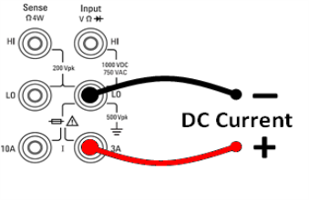
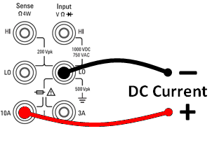

This section describes how to configure DC current measurements from the front panel.
Step 1: Configure the test leads as shown.

On the 34461A/65A/70A, you can also configure the measurement using the 10 A terminal, which is recommended when measuring current above 1 A:

Step 2: Press [DCI] on the front panel.
Step 3: For the 34465A/70A, the Aperture NPLC softkey is selected by default. Use the up/down arrow keys to specify integration time in power-line cycles (PLCs) to use for the measurement . 1, 10, and 100 PLC provide normal mode (line frequency noise) rejection. Selecting 100 PLC provides the best noise rejection and resolution, but the slowest measurements:
Step 4 (34461A/65A/70A only): The 3A terminals are selected by default. The Terminals softkey toggles between the 3 A terminals and the 10 A input terminals. When you change this to 10 A, the measurement range automatically becomes 10 A.
Step 5: Press Range to select a range for the measurement. You can also use the [+], [-], and [Range] keys on the front panel to select the range. (Auto (autorange) automatically selects the range for the measurement based on the input. Autoranging is convenient, but it results in slower measurements than using a manual range. Autoranging goes up a range at 120% of the present range, and down a range below 10% of the present range. Press More to switch between the two pages of settings.
Step 6: Auto Zero: Autozero provides the most accurate measurements, but requires additional time to perform the zero measurement.With autozero enabled (On), the DMM internally measures the offset following each measurement. It then subtracts that measurement from the preceding reading. This prevents offset voltages present on the DMM’s input circuitry from affecting measurement accuracy. With autozero disabled (Off), the DMM measures the offset once and subtracts the offset from all subsequent measurements. The DMM takes a new offset measurement each time you change the function, range, or integration time. ( There is no autozero setting for 4-wire measurements.)